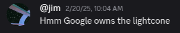
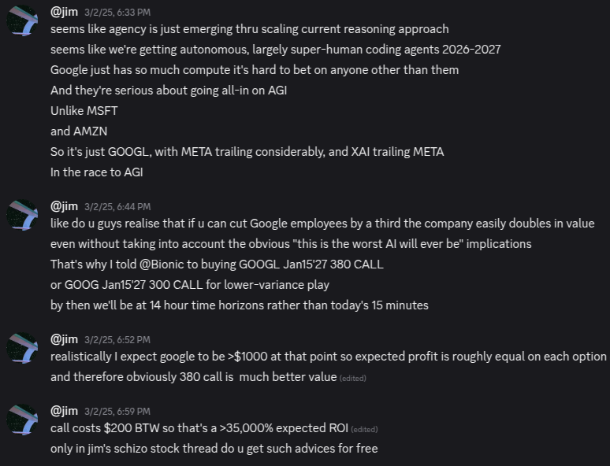
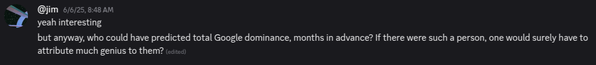
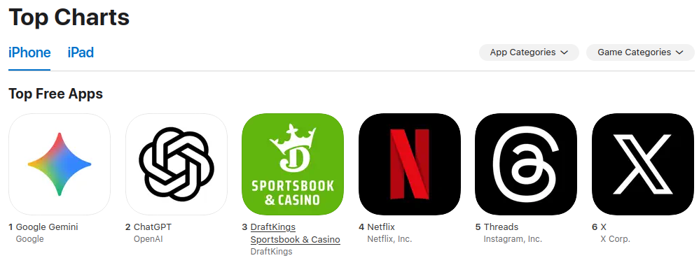

Google will eat everything, like agar.io
(14/sep/25)
Google is the favourite in the race to AGI.
A chronology of my Google posts:
19/dec/24

20/feb/25
02/mar/25
25/mar/25

06/jun/25
"who could have predicted total Google dominance, months in advance? If there were such a person, one would surely have to attribute much genius to them"
Google will eat the other AI labs.
Google will also eat:
- Adobe.
- Tesla.
- Apple.
- Netflix.
- The video games industry.
- The consulting industry.
- The medical industry.
- The manufacturing industry.
- Etc.
Google's Gemini 2.5 LLM, Veo 3 video generation model, Genie 3 interactive world model, and Nano Banana image generation model have already made the extent of Google's competence clear. And the rate at which Google has made the research breakthroughs required to create these models has made its trajectory clear.
My prediction that Google's advantages in compute, data, and talent would allow them to achieve total dominance in AI (and therefore in everything) has so far been borne out well.
I may be celebrating too early on this final point, but Google Gemini has, just this weekend, surpassed ChatGPT to top the iPhone app charts and worldwide Google Search trends. This may not be sustained. But, if it is not, before long Gemini will return to the top. That is the arc of the near-future.
